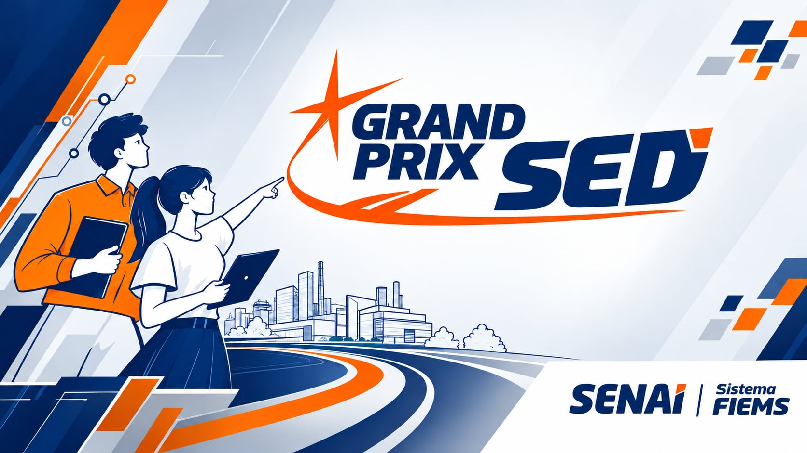

01
Explore o desafio
Conheça a demanda, investigue o problema e construa a proposta de valor da equipe.

Estudantes do Novo Ensino Médio das escolas estaduais de Mato Grosso do Sul, com o SENAI, conectados aos desafios reais da indústria.
O Grand Prix SED conecta estudantes das escolas estaduais de Mato Grosso do Sul aos desafios da indústria. Em equipes — as escuderias —, os alunos investigam problemas, desenvolvem soluções e apresentam suas ideias.
Explore as 10 demandasOs alunos do Novo Ensino Médio das escolas estaduais do MS com o SENAI são os protagonistas do Grand Prix. Organizados em equipes, as escuderias, eles investigam desafios reais da indústria e desenvolvem suas próprias soluções, da concepção da ideia até a entrega do projeto final.
Conheça a demanda, investigue o problema e construa a proposta de valor da equipe.
Com sua equipe, transforme a ideia em um conceito e um protótipo, aplicando os conhecimentos e a criatividade dos próprios alunos.
Organize a solução e prepare o pitch para apresentar o resultado da escuderia.
Acompanhe no calendário as etapas do Grand Prix SED 2026, da inscrição à avaliação.
O líder cadastra a equipe, os integrantes e o instrutor.
Conferência e homologação das inscrições das equipes.
Desenvolvimento e entrega das soluções pelas escuderias.
Avaliação dos projetos desenvolvidos pelas escuderias.
Conheça as áreas de competição e selecione a demanda da sua escuderia no formulário de inscrição.
Açúcar e Álcool • Agroindústria • Agroecologia • Agronegócio
Papel e Celulose • Florestas
Automação Industrial • Eletromecânica • Eletrotécnica • Mecatrônica
Refrigeração e Climatização • Manutenção Automotiva
Energia Renovável
Meio Ambiente • Mineração
Logística
Segurança do Trabalho
Administração • Recursos Humanos • Publicidade
Informática para Internet • Programação de Jogos Digitais
Consulte as regras da competição e o modelo para organizar a proposta da equipe.
Regras de participação e orientações do Grand Prix SED 2026.
Arquivo em breveModelo para estruturar o problema, a proposta de valor e a solução da equipe.
Arquivo em breveO líder faz uma única inscrição e informa os dados de toda a equipe.